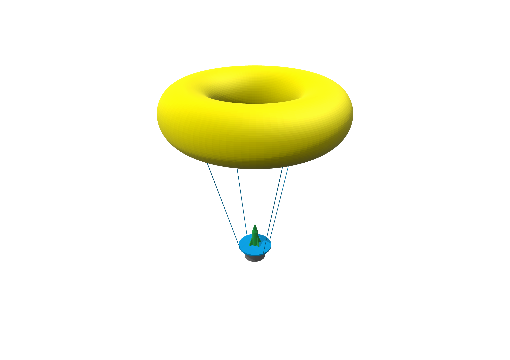

Missions
Balloon Launch System B.L.S.
The ultimate goal of this mission is to successfully carry a rocket to the edge of space by a high-altitude balloon-lifted launch apparatus. This underdeveloped method of carrying small satellites and cargo into space will result in drastic cost reductions thereby making space much more accessible to everyone.
Phase 1
Phase 1 will mark the first flight of the basic launch apparatus design. This will be a scaled down test. The balloon apparatus will be tethered to the ground and the rocket will be a small, solid fueled, low apogee rocket. The launch apparatus will travel to approximately 500 feet and then the rocket will travel about another 500 feet. One of the goals of this launch is to test our flight computer and make sure that it has the ability to properly launch the rocket using a servo to activate the ignition system. In this phase, we will only account for altitude, using an altimeter, to determine if the apparatus has reached the desired launch environment. In future phases, we hope to also use pressure, temperature, gyroscopic, and GPS data to ensure that we have the desired launch environment. The flight computer will report sensor data and launch program progress via Software Defined Radio (RTL-SDR) to the ground. The flight computer, sensors, servo, and power supply will be housed in the instrument module, affixed to the bottom of the launch apparatus, just below the rocket. In future phases, the instrument module will be detached from the apparatus after launch, ejecting a parachute as it falls. This way, the most expensive parts of the apparatus - while comparatively very inexpensive to contemporary rocket launches - will be salvaged and reused. In the future, we will track the descent of both the launch apparatus and instrument module using GPS.
Possible Designs
